Remembrance exhibition
DDP Seoul · 22—23.08.2025
dearly
Be present.
Remember.
In presence we gather.
In memory we continue.

01 · About the exhibition
Memory does not disappear.
Dearly is a remembrance exhibition that gives private memory a shared public form. The identity begins with a single hand-made imprint: a small trace of one person, held with care.
Each mark becomes a flower. Gathered together, the flowers form a field that moves across print, objects, walls, and the architecture of DDP Seoul. The system turns remembrance into a collective act: quiet, visible, and still growing.
02 · Identity system
One memory
at a time.
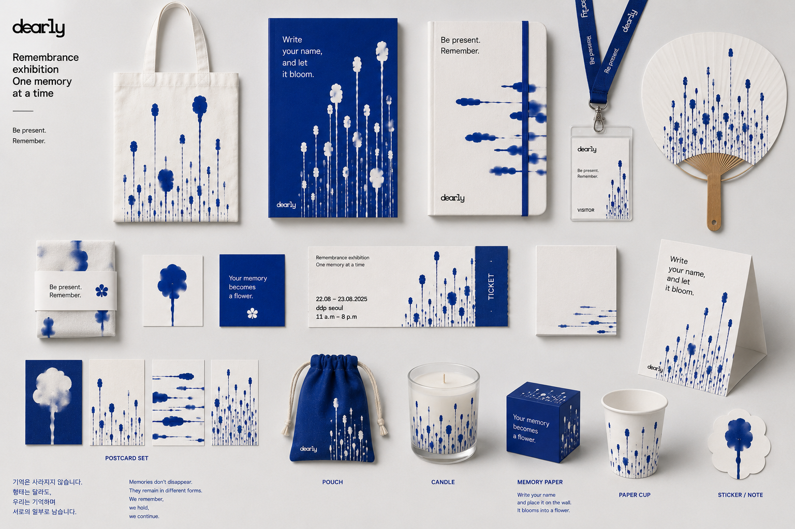
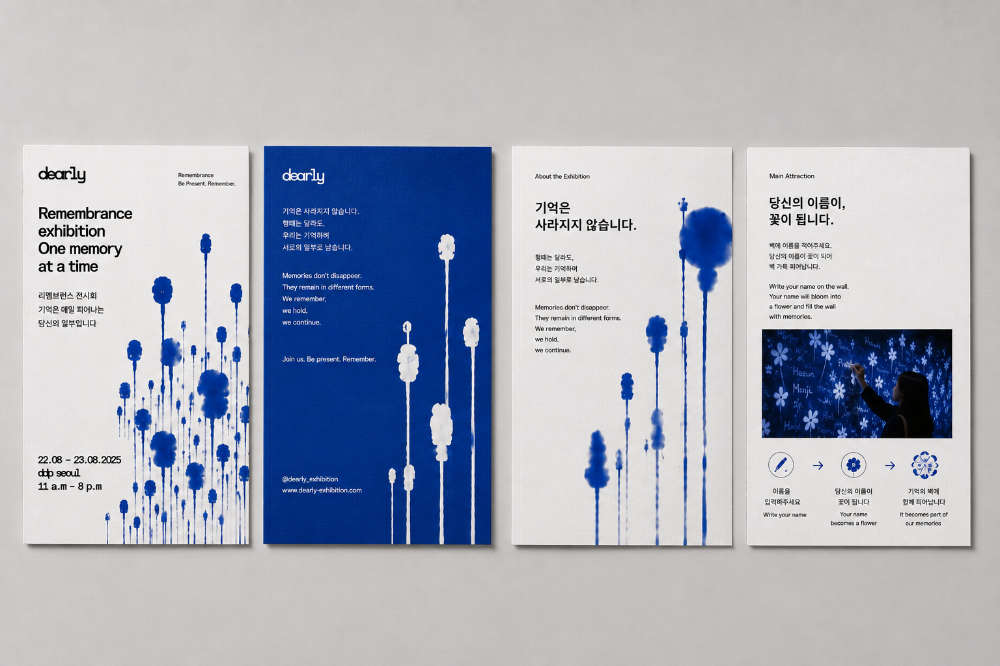
Poster language
Different arrangements keep every imprint individual while allowing the full series to read as one voice.
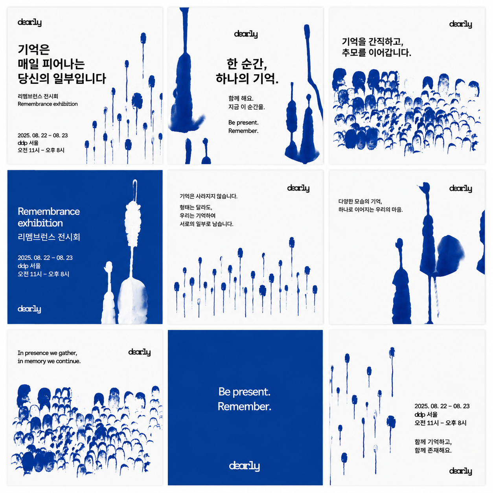
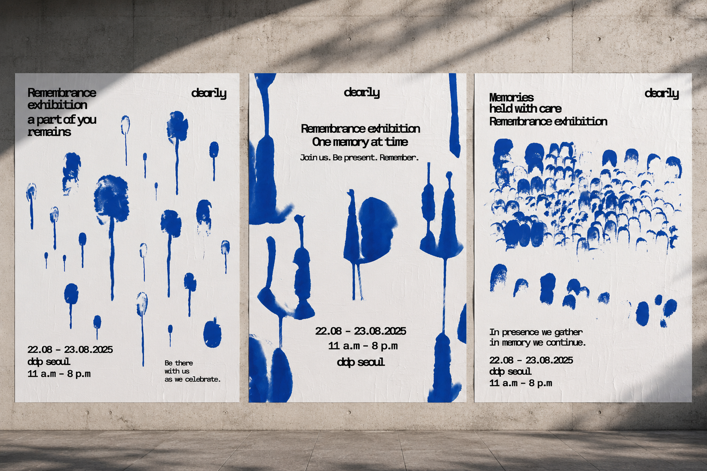
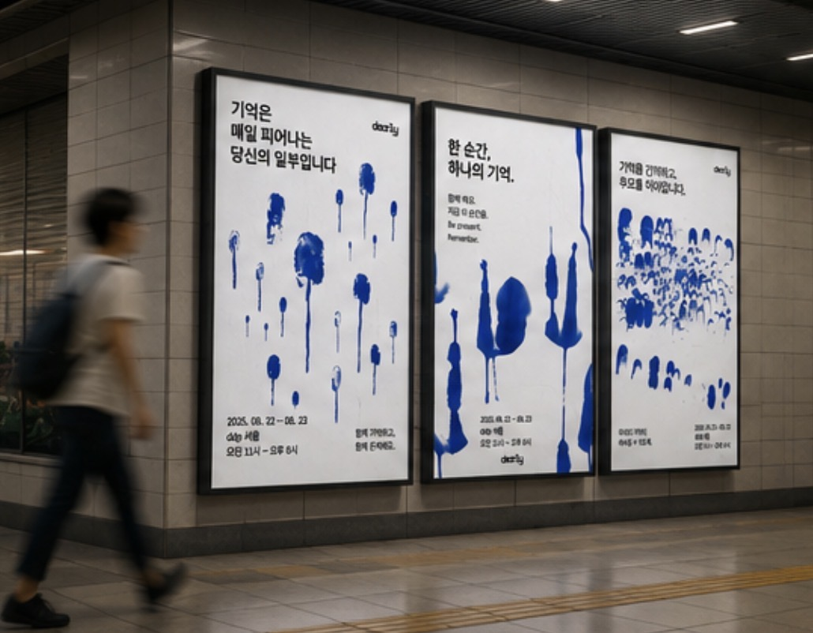
03 · Identity in public space
A field of memory
across the city.
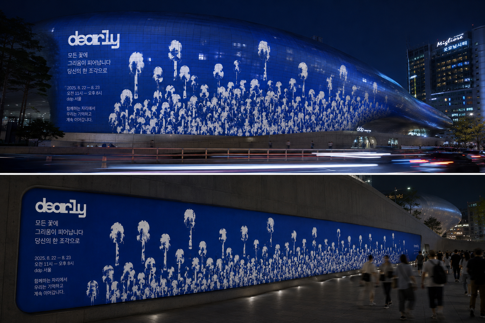
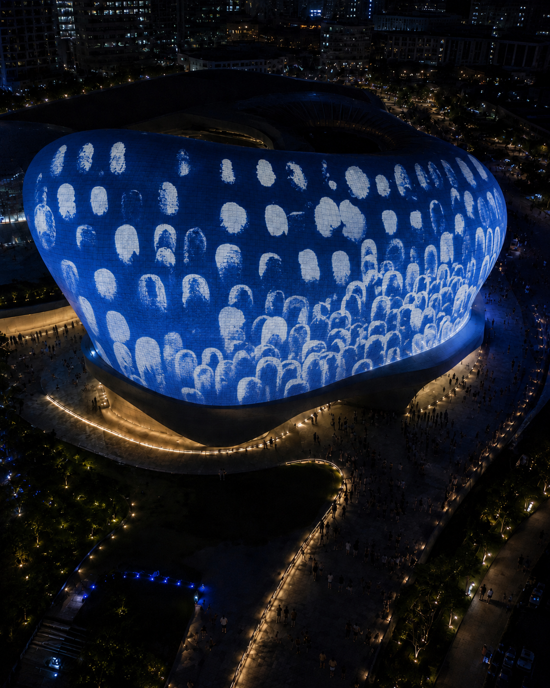
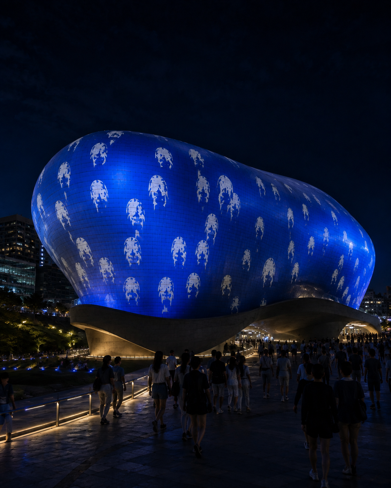
Participation
Write your name,
and let it bloom.
Visitors add names, messages, and memories to the wall. The field is never a fixed image; it changes through the people who enter it and leave a trace behind.
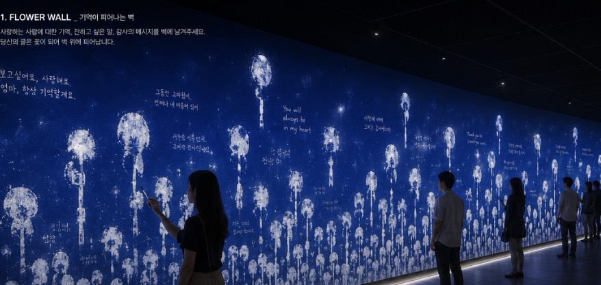
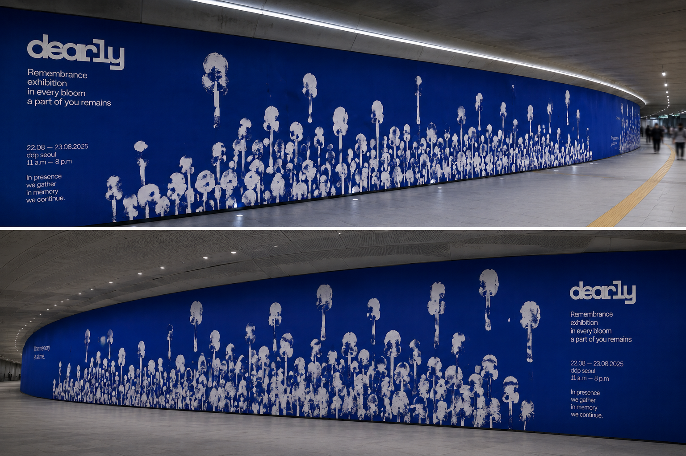
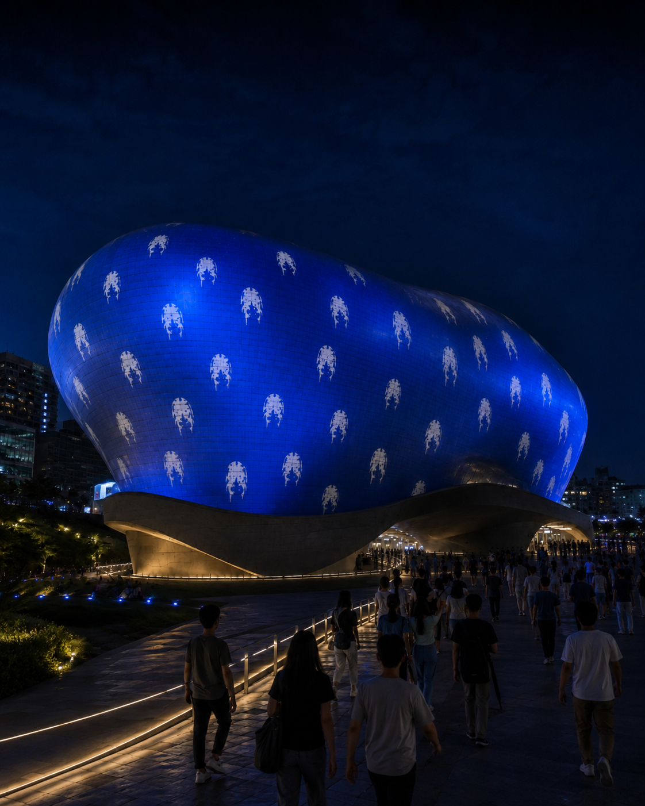
04 · Process
From imprint
to flower.
The project began in black and white, through repeated ink impressions made by hand. Pressure, movement, and the amount of ink gave each mark a different density and edge. No two traces were identical.
Alongside these image tests, the typographic system was developed with Azeret Mono. Its constructed, monospaced rhythm gives the changing marks a clear framework and carries the visual language consistently from exhibition information to large-scale environmental text.
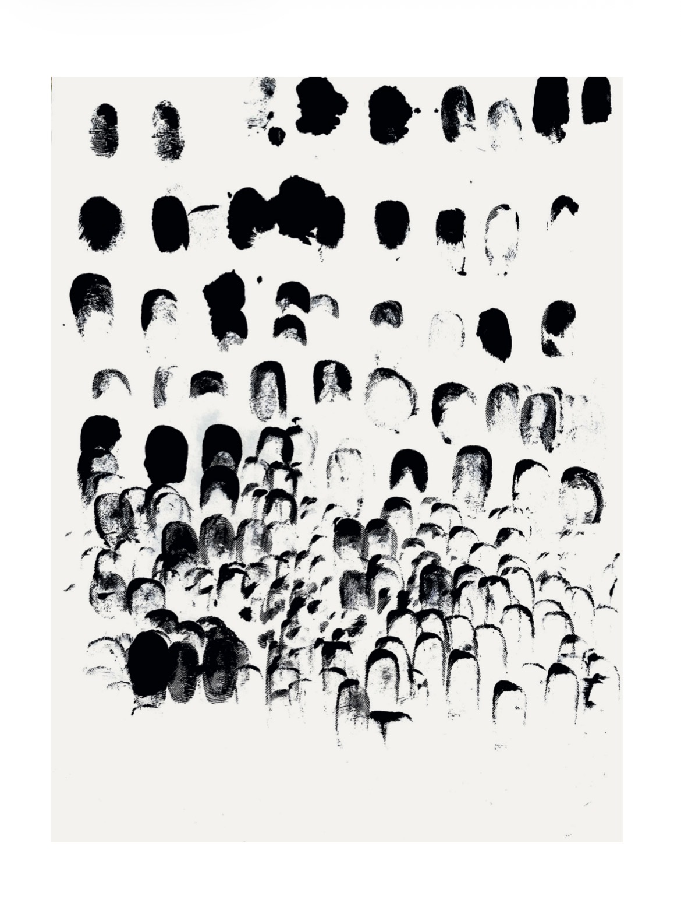
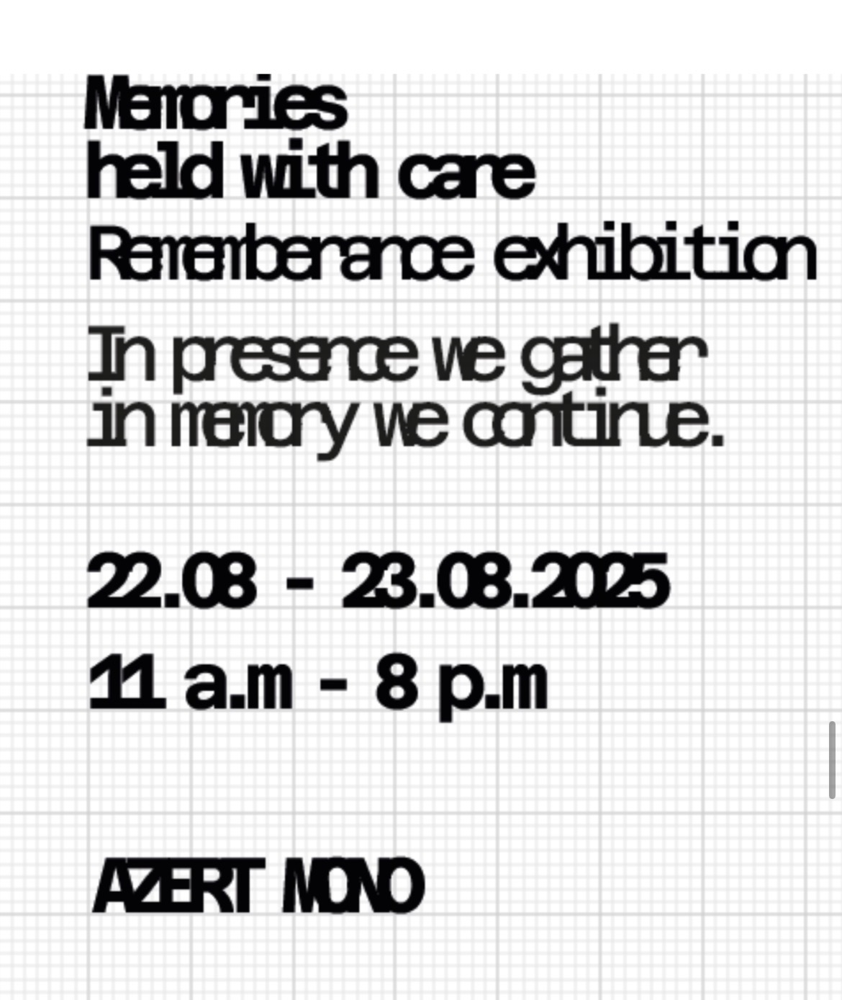